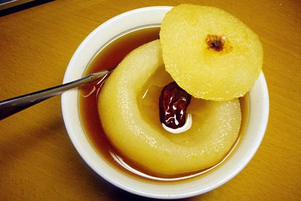

惊蛰，是二十四节气中的第三个节气，古称“启蛰”，此时，太阳运行到黄经345°。2018年的惊蛰时间是3月5日（农历戊戌年正月十八）。此时大地回暖，长江流域天公作雷，雷声震动，万物萌动，大部分地区进入春耕季节，花鸟树木更是春意盎然。
《月令七十二候集解》记载，“二月节……万物出乎震，震为雷，故曰惊蛰，是蛰虫惊而出走矣。”惊蛰三候为：“一候桃始华；二候仓庚鸣；三候鹰化为鸠。”对应的花信为：“一候桃花，二候杏花， 三候蔷薇。”惊蛰，就意味着桃花盛开、黄鹂鸣叫、布谷鸟飞来的时节到了。
惊蛰节气正值“九九”艳阳天。“九九加一九，犁牛遍地走”，气温回升，雨水增多，春耕大忙的季节到了。“春雷惊百虫”，温暖的气候条件可能带来病虫害的发生和蔓延，田间杂草也相继萌发，此时需做好病虫害防治和中耕除草。“桃花开，猪瘟来”，家禽家畜的防疫也需要重视。
俗话说“过了惊蛰节，春耕不能歇。”劳动人民自古就非常重视惊蛰节气，把它视为春耕的开始。惊蛰虽然气温升高迅速，雨量却有限，春旱开始露头。这时小麦孕穗、油菜开花都处于需水较多的时期，对水分要求很高。
祭白虎 根据民间传说，白虎是口舌、是非之神，每年都会在这天出来觅食，开口噬人，犯白虎会导致百般不顺。人们为了自保，便在惊蛰之时祭白虎。拜祭用纸绘制的老虎，虎口画有一对獠牙。拜祭时用猪血猪肉，寓意白虎吃饱后不再出口伤人，化解是非。
吃梨 民间惊蛰吃梨的习俗由来已久。“梨”与“离”谐音，据传有不忘先祖、离家创业的意思；或说吃梨寓意虫害远离庄稼，保障全年好收成。从节气养生来看，此时万物复苏，气候比较干燥，很容易外感咳嗽。生梨性寒味甘，吃梨确也有润肺止咳、滋阴清热的功效。
吃炒虫 惊蛰雷动，百虫“惊而出走”，或殃害庄稼，或滋扰生活。浙江宁波地区的农家视惊蛰为“扫虫节”，人们会拿着扫帚到田里举行扫虫仪式。闽西古汀州地区的客家人，或在热水中煮带皮毛的芋子，或炒豆子、炒米谷，认为这样可以消灭多种小虫。在江西上犹、崇义以及吉安遂川客家，惊蛰日上午，农家将谷种、豆种、南瓜和向日葵的种子等取一小撮放入锅中干炒，谓之“炒虫”，炒熟后分给自家或邻居小孩食之，据说可保五谷丰收，不受虫害。